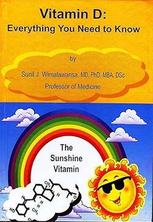
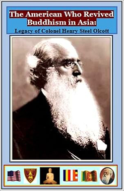
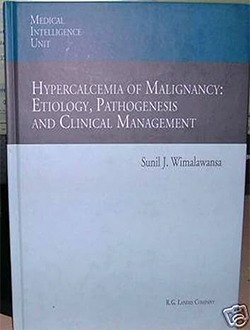

The following is a collection of books authored or contributed to by the founder of the organization, Dr. Sunil J. Wimalawansa, covering a range of medical topics as well as the history of Buddhism. Both print and PDF versions are available to purchase. 50% of the proceeds from these books go to charities in Sri Lanka.
Vitamin D: Everything You Need to Know (Nutrition and Vitamin D)

By Sunil J. Wimalawansa, MD
$35.00
Buy on Amazon| USA Shipping: | Add $4.00 |
| International Shipping: | Add $23.50 |
| Hardcover: | 372 pages |
| Publisher: | Karu Sons; 1.1 edition (2012) |
| Language: | English |
| ISBN-13: | 978-9559098942 |
Description:
Vitamin D deficiency is an epidemic. Yet majorities of individuals have undiagnosed and untreated vitamin D deficiency. This book enhances the awareness, facilitates understanding the physiology and pathophysiology, adverse health effects, methods of identification of vulnerable populations, and safe and cost-effective regimens for correcting vitamin D deficiency. Human lives are dependent on adequate exposure to sunlight. Vitamin D3 generated in the skin after exposure to ultraviolet rays, which should provide us over 80% of daily vitamin D requirement. However, our exposure to sunlight has declined. Consequently, diet and supplements has become more important. Certain foods fortified with vitamin D in many countries. Rickets in children and osteomalacia in adults are manifestations of severe vitamin D deficiency. Inadequate serum 25(OH)D levels and low calcium intake causes osteomalacia and increase fracture risks. In addition to calcium metabolism, vitamin D also facilitates several important physiological processes. Its deficiency exacerbates heart diseases, autoimmune diseases, type 2 diabetes, obesity, cancer, and premature deaths. Replenishment of serum 25(OH)D levels to greater than 30 ng/mL (75 nmol/L) minimizes adverse health effects. Cost-effective, community- and country-wide preventative strategies are essential in ensuring adequate vitamin D intake in relation to geographical settings, seasonal variation, environmental pollution, skin pigmentation and cultural habits. This book addressed these and explores the relationship of vitamin D with skeletal and non-skeletal systems, mechanisms of actions, new and old targets, and practical means of achieving vitamin D sufficiency with supplementation. Book contains 378 pages with 75 color illustrations, in hard cover, and printed on high quality paper. It is easy to read and understand by both healthcare professionals and the public.
The Intertwined Histories of Buddhism and Sri Lanka
By Sunil J. Wimalawansa, MD
$12.00
Buy on Amazon| USA Shipping: | Add $4.00 |
| International Shipping: | Add $23.50 |
| Laminated paperback: | 240 pages |
| Publisher: | Colombo: Sunil J. Wimalawansa; 1st edition (2011) |
| Language: | English |
| ISBN-10: | 955909890X |
| ISBN-13: | 978-9559098904 |
Description:
The Intertwined Histories of Buddhism and Sri Lanka, by Dr. Sunil Wimalawansa, a Professor of Medicine, U.S.A., is a comprehensive and easy-to-read book packed with information. It provides an extensive account of the past 2,000-year history of Sri Lanka, focusing on how Buddhism shaped the country and the society to its current form, and the revival of Buddhism over the years. This book also contains a large number of color photographs related to the topic and provides great insight into the history that can be absorbed in a short period. In addition, it provides vibrant information on the history of Buddhism, and the lessons learned from the 500 years of foreign occupation of Ceylon (now Sri Lanka) by Westerners.
Reviews from Readers:
"Excellent book that summarise thousands of pages of history of Sri Lanka and the Buddhism over the past 2,500 years. Easy to read, in simple English with plenty of high quality colour plates and pictures. The book is printed in glossy high quality paper in a hardcover. Recommendation to the Education Department and the Ministry of education in Sri Lanka: Highly recommended to include into the school curriculum in Sri Lanka."
The American Who Revived Buddhism in Asia: Legacy of Colonel Henry Steel Olcott

By Sunil J. Wimalawansa, MD
$6.50
Buy on Amazon| USA Shipping: | Add $4.00 |
| International Shipping: | Add $23.50 |
| Laminated paperback: | 84 pages |
| Publisher: | Sunil J. Wimalawansa (2011) |
| Language: | English |
| ISBN-10: | 9559098918 |
| ISBN-13: | 978-9559098911 |
Description:
The American Who Revived Buddhism in Asia, by Dr. Sunil Wimalawansa, a Professor of Medicine, U.S.A., is a study of the famous American Colonel Henry Olcott, the originator of the Theosophist movement, who became a hero without the traditional springboard of influence and power. The author gives the reader a ground-breaking inside account of Olcott’s life, which began in America, and ended in India. The author details how Col. Olcott contributed to the rule of law during turbulent times in the United States and how he displayed incredible inner strength and courage. Colonel Olcott also revived the Buddhists from the yoke of the suppressive British rule. The author provides a vivid account of Olcott’s leadership in Sri Lanka and India and a historical account of other key leaders who helped to shape the future of Lanka and South East Asia. This book is easy to read and of high quality. It contains an impressive collection of rare color photographs and provides an insight into Olcott’s numerous contributions to the South Asian Buddhist educational system.
Hypercalcemia of Malignancy: Etiology, Pathogenesis and Clinical Management

By Sunil J. Wimalawansa, MD
$86.50
Buy on Amazon| USA Shipping: | Add $4.00 |
| International Shipping: | Add $23.50 |
| Series: | Medical Intelligence Unit |
| Hardcover: | 197 pages |
| Publisher: | Springer; 1 edition (November 30, 1995) |
| Language: | English |
| ISBN-10: | 3540600345 |
| ISBN-13: | 978-3540600343 |
Description:
Hypercalcemia is the most common endocrine complication affecting patients with malignancies, and is of considerable clinical importance. This book describes the underlying mechanisms of hypercalcemia associated with cancer, and provides a review of diagrams and clinical management with special emphasis on therapeutic agents. This monograph provides a wealth of experience in basic bench research in this area as well as extensive clinical experience with a large number of patients.